데이터 분석/시각화 따라하기¶
1단계) 유통포털에 로그인¶
오픈랩을 사용하기 위해서는 홈페이지에 로그인 절차를 진행한후에 데이터를 구매해서 오픈랩을 이용 할수 있습니다
로그인을 진행하여 정상적으로 로그인이 되었으면 이제 물품을 구매할 준비가 되었습니다

2단계) 데이터 상품 구매¶
오픈랩을 이용하기 위해서는 데이터를 구매해야하는데,
이번 단계에서는 “VDS콘존별”상품을 구매한다는 가정하에 데이터상품 구매절차를 진행하겠습니다
상단의 검색 입력란에 구매하려는 “VDS콘존별” 검색어를 입력하고 “검색”버튼을 클릭합니다
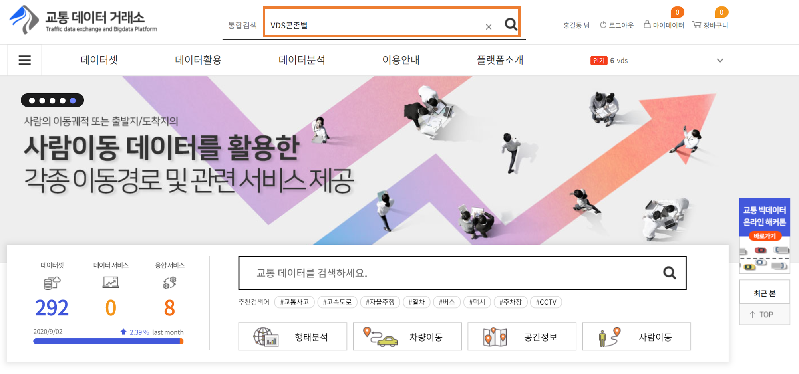구매하려는 “VDS콘존별”이 싸이트에서 제공하는걸 볼수 있습니다
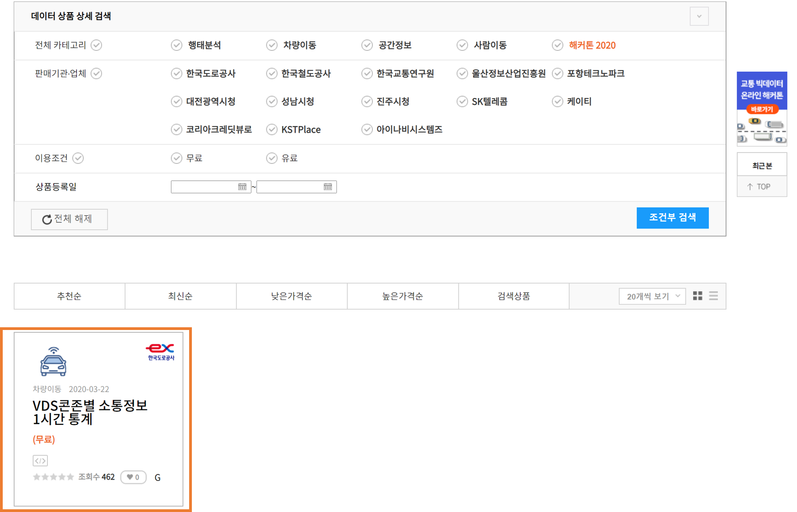검색해서 나오는 물품중에서 “VDS콘존별 소통정보 1시간 통계” 상품을 클릭하여 상세정보를 확인 할수 있습니다
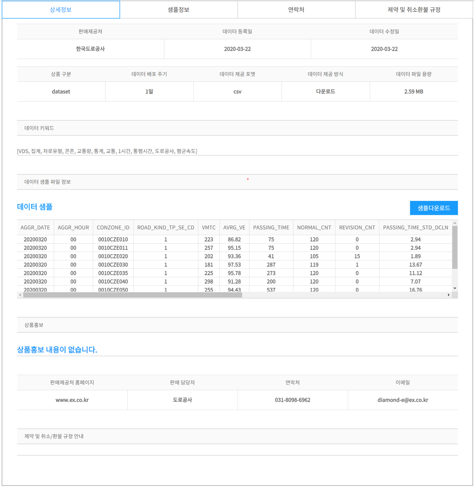상세정보에서는 데이터상품정보와 가격, 샘플저보, 판매연락처, 제약 및 취소환불 규정, 데이터이용하기, 장바구니, 찜하기 정보를 확인할수 있습니다.
이번 튜토리얼에서는 데이터상품을 구매하려고 하기 때문에 “데이터 이용하기” 버튼을 눌러서 결제절차를 진행 하겠습니다
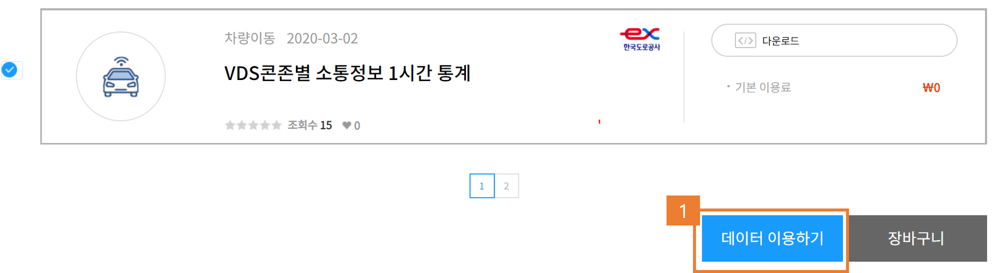데이터 이용하기 버튼을 누르면 아래의 주문결제 화면이
구매하려는 거래상품정보를 다시 확인하고 최종 결제정보창에서는 상품수, 상품금액, 학인금액을 총 합산한 결제금액을 확인할수 있습니다
결제하려는 총 금액을 확인후에 결제대행서비스 이용약관 동의에 체크표시를 합니다
“결제하기” 버튼을 눌러서 결제를 진행합니다
아래의 화면과 같이 거래상품 정보와 최종결제정보 창이 나오는데 “결제하기” 버튼을 누릅니다
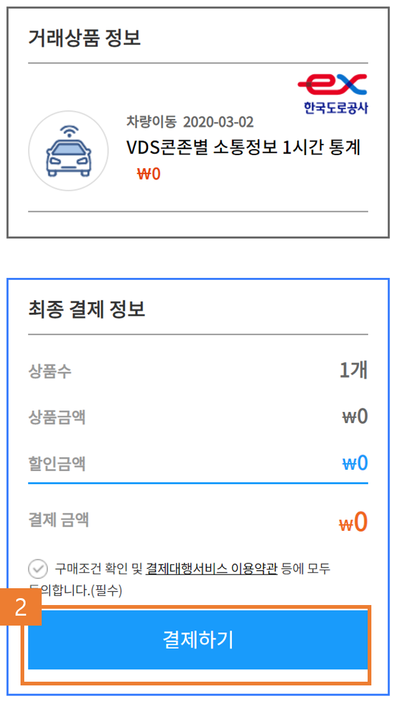정상적으로 결제절차가 이루어지면 어래와 같은 주문완료 페이지로 바뀝니다
나의거래정보를 클릭하면 결제한 물품의 구매내역을 확인할수 있습니다
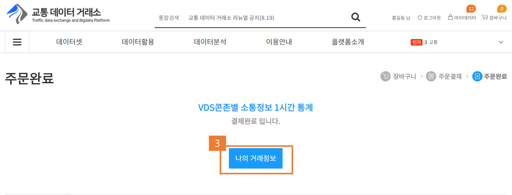아래의 그림과 같이 현재까지 진행해서 구매한 “VDS콘존별 소통정보 1시간 통계”가 정상적으로 구매가 된것을 확인할수 있습니다
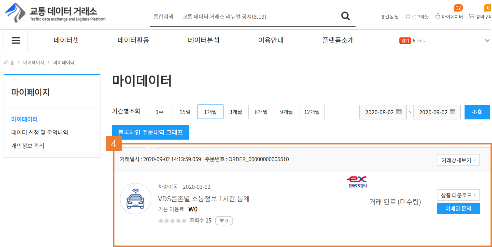3단계) 오픈랩 실행¶
오픈랩을 실행하려면 기본적으로 이용하려는 싸이트애 로그인이 되어있어야하며 로그인이 되어있는지 확인되었으면,
화면의 검은색바탕의 직사각형 모양의 “오픈랩” 아이콘을 클릭합니다
(*로그인이 되어 있어야만 “오픈랩”을 이용할수 있습니다. 로그인이 안되어 있으면 로그인창으로 화면이 전환됩니다)
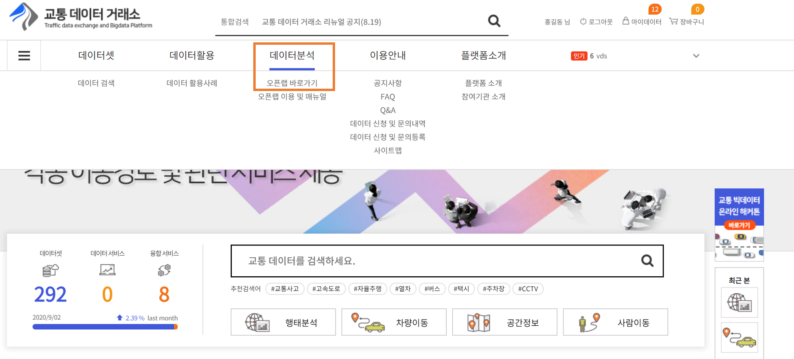“오픈랩” 아이콘을 클릭하면 새로운 인터넷브라우저가 열리면서
카테고리, 상품명, 설명, 구매날짜, 상품 등록 날짜, 분석모델상태, 분석 모델 만료 예정일을 확인하는 기본적인 오픈랩 화면이 나옵니다
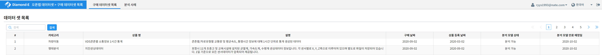4단계) 구매 데이터에 대한 분석하기 신청¶
이번단계에서는 앞서 진행해서 구매한 “VDS콘존별 소통정보 1시간 통계”물품에 대해 분석데이터 신청하는 방법을 진행하겠습니다
왼쪽상단에 파란색의”Diamond-E 오픈랩 데이터셋 > 구매 데이터셋 목록” 메뉴를 클릭합니다.
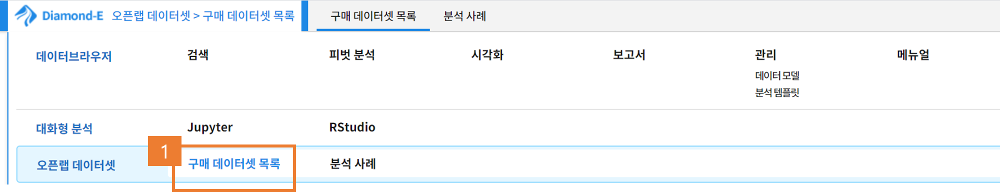“구매 데이터셋 목록”을 클릭하면 상품을 구매한 상품목록과 기본적으로 제공하는 상품목록이 나옵니다
저희는 구매한 상품에대해서 데이터분석신청을 하는것이 목표이기 때문에 분석모델상태 항목이 표현되고, 분석 가능 여부를 보여줍니다.
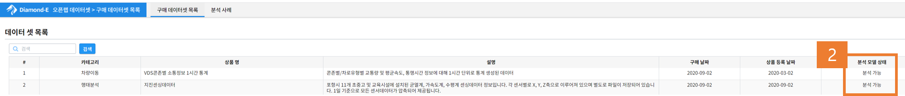다시 한번더 정상적으로 분석신청이 되었는지 확인하기 위해서
상단의 메인 검색 입력란에 “VDS콘존별”을 입력하고 “검색”버턴을 클릭을 합니다
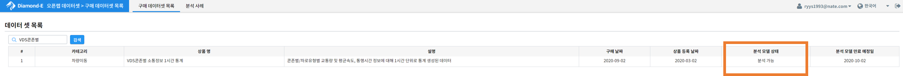아래의 그림과 같이 “VDS콘존별” 상품에 대해 분석 모델 상태가 ‘분석 가능’ 으로 되어 있어서 데이터의 모델설정및 검색, 시각화 준비가 되었습니다
5단계) 데이터 모델 상세 항목 설정 (옵션)¶
이번단계에서는 4단계에서 진행한 분석 가능한 구매한 물품에대해 데이터모델을 설정하는 단계입니다
왼쪽상단에 파란색의”Diamond-E > 데이터 브라우저 > 관리 > 데이터 모델” 메뉴를 클릭합니다
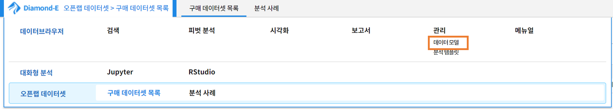데이터모델을 클릭하면 데이터모델목록 화면이 나타납니다
모델명에 2단계에서 구매한 “VDS콘존별 소통정보 1시간 통계” 항목이 보일것입니다
“VDS콘존별 소통정보 1시간 통계”행의 “편집”버튼을 누르면 편집,복사,삭제 를 클릭할수 잇는 선택항목이 나오는데 “편집”을 클릭합니다
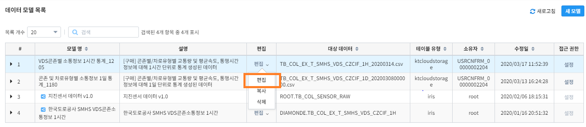아래의 그림과 같이 팝업창이 뜨게 됩니다
주황색1번의 시간항목의 컬럼항목을 클릭하면 데이터들의 선택하수 있는 컬럼명이 나열됩니다
그중에서 주황색 2번의 “LAST_CHANGE_TIME” 컬럼을 선택합니다
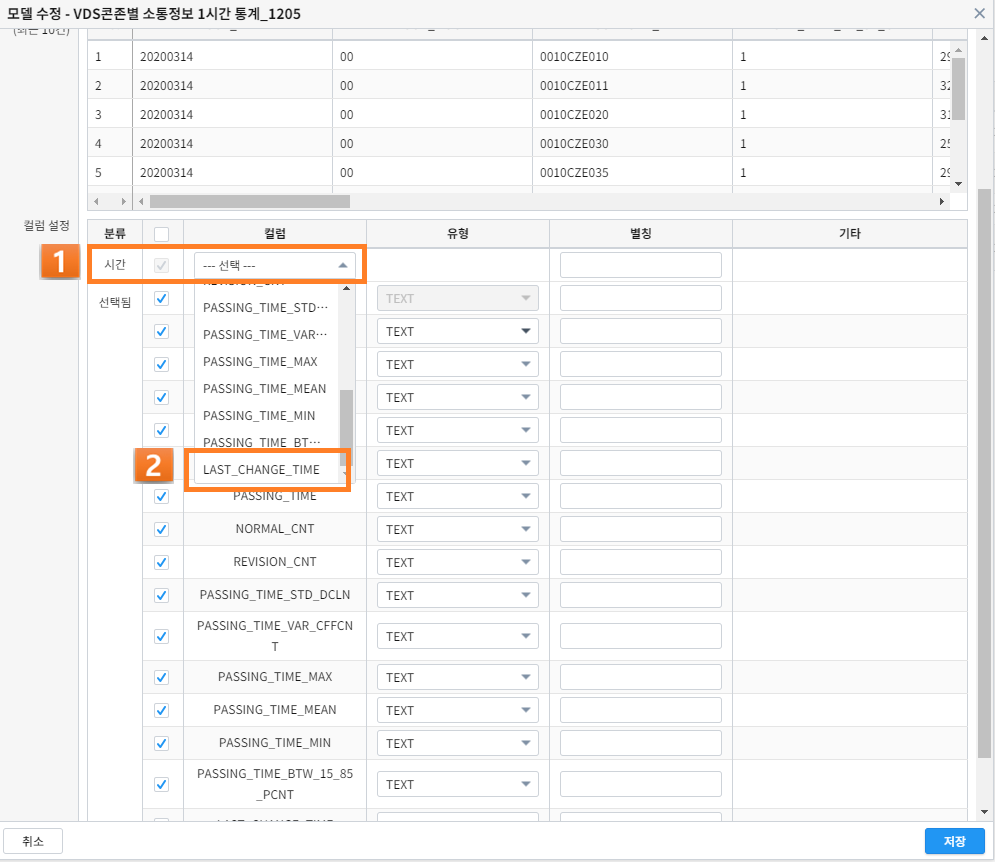주황색으로 표시된 분류옆의 네모모양의 선택버튼을 클릭하여 모든 컬럼을 선택합니다
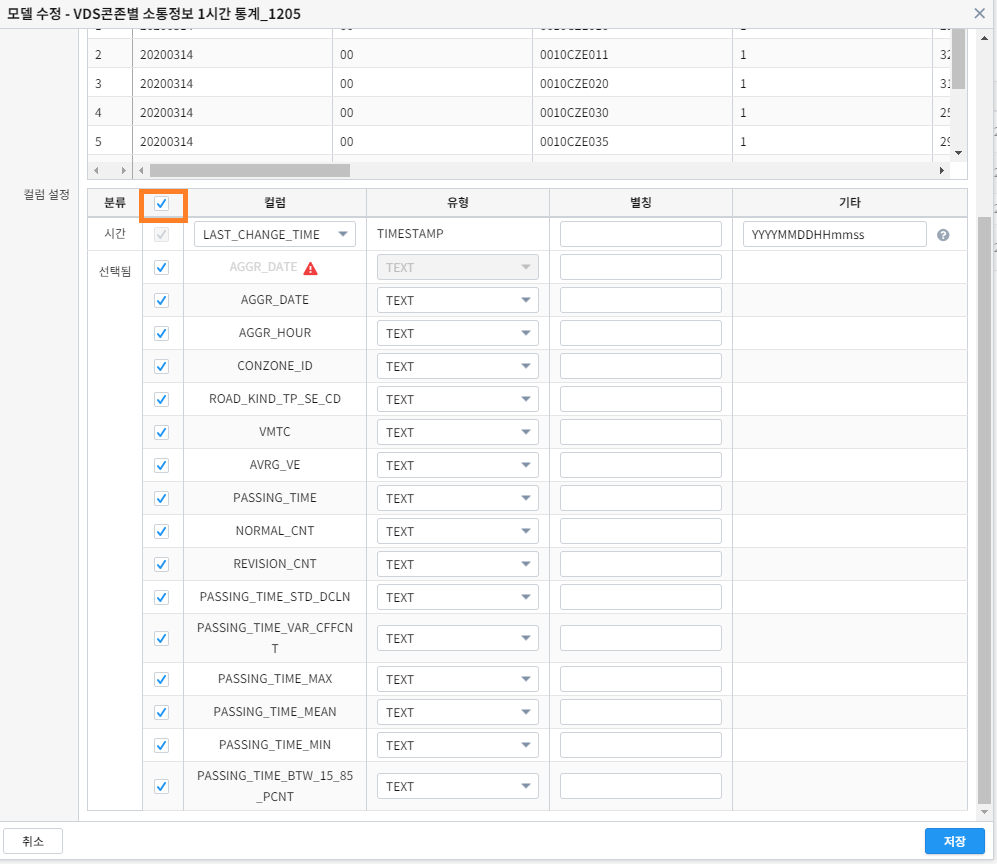이제 데이터의 각 컬럼에 대해서 유형을 정의하는 단계입니다
주황색으로 표시된 유형을 클릭하면 컬럼타입을 선택할수 있는 컬렴유형들이 나열됩니다
각 컬럼데이터 특성을 고려하여,
교통량, 평균속도,통행시간, 정상건수, 보정건수등 숫자 값에 대해서는 “INTEGER , REAL”
교통명, 도로코드등 이름 값에 대해서는 “TEXT”
시작시간, 마지막날짜등 날짜 값에 대해서는 “DATE, TIMESTAMP” 를 지정합니다
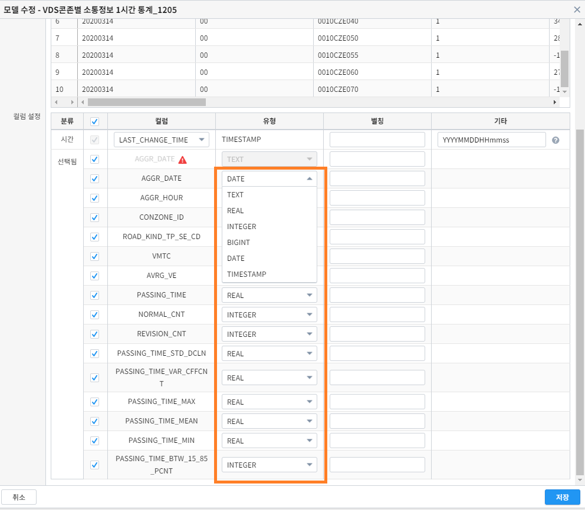“별칭”항목은 영어로되어있는 컬럼명을 한글로 입력하여 직관적으로 알아볼수 있게 하는 기능입니다
예로 AGGR_DATE컬럼에 대해 입력란에 “년월일”을 입력을 해서 확인할수 있습니다
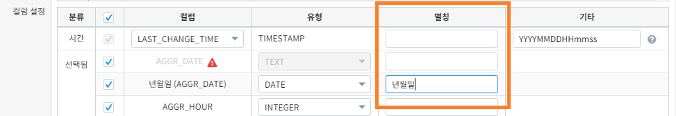6단계) 데이터 내부 형태 파악 및 검색¶
이번단계에서는 5단계에서 진행한 데이터모델을 설정을 했으면 물품에대해 검색을 하는 단계입니다
왼쪽상단에 파란색의”Diamond-E 데이터브라우저 > “검색” 메뉴를 클릭합니다
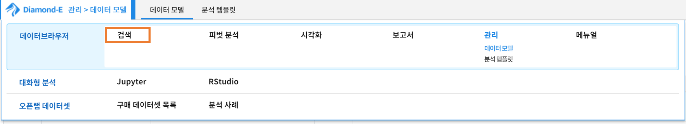화면이 바뀌면서 왼쪽에는 2단계에서 구매한 “VDS콘존별 소통정보1시간통계”항목과 기본적으로 제공하는 항목이 나열되어 나옵니다
2단계에서 구매한 “VDS콘존별 소통정보1시간통계”항목에 마우스를 대고 마우스 왼쪽버튼으로 더블클릭을 합니다
그러면 2번항목처럼 컬럼명과 5단계에서 지정한 컬럼유형이 나열이 됩니다
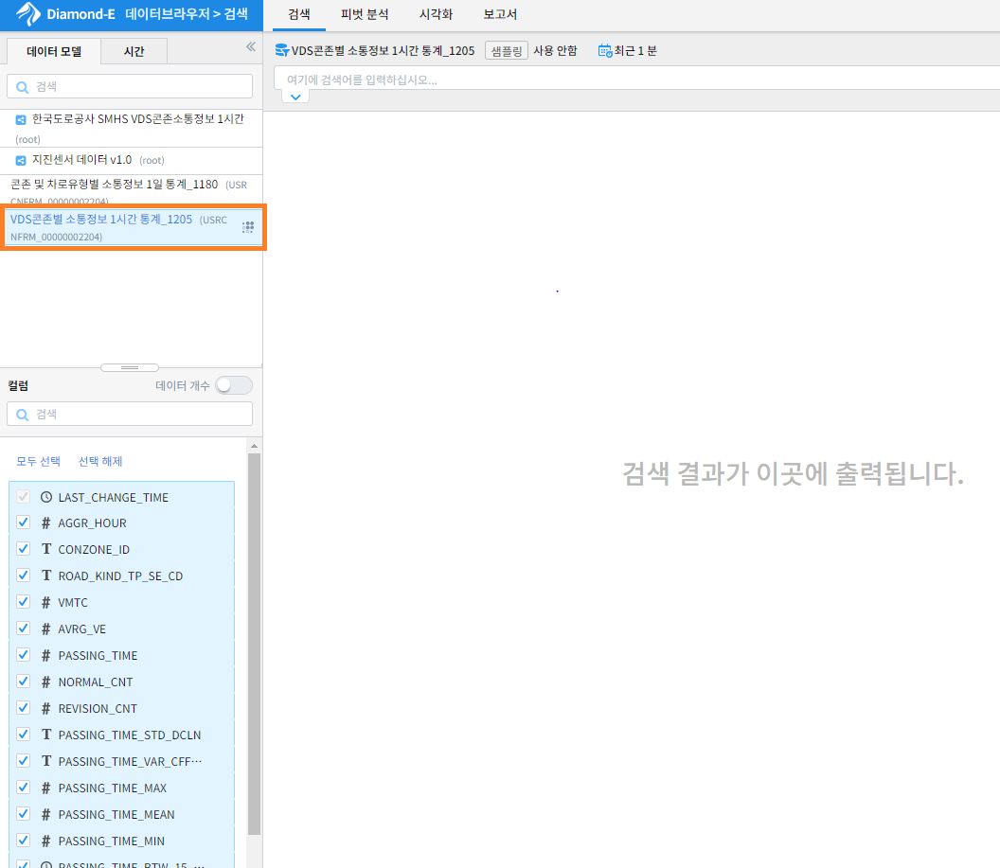1번에 표시된 시간설정 탭을 선택합니다.
화면탭이 바뀌면서 데이터기간 조회할수있는 여러 시간졸류가 나타납니다
이번 튜토리얼에서는 2번에 표시된 “전체시간”을 선택합니다
그러면 3번에 표시된 곳에 “전체시간”으로 바뀌게 돼면서 정상적으로 시간설정이 진행되었습니다
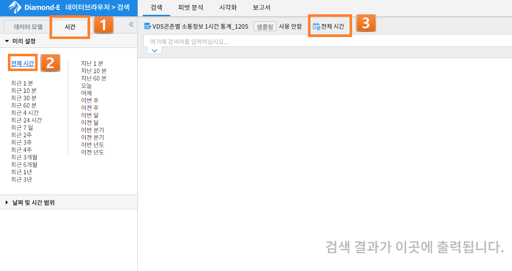“VDS콘존별 소통정보1시간통계”모델지정과 시간설정을 진행하면 검색하기 위한 준비는 끝났습니다
이번단계의 목표인 검색을 하기위해 1번에 표시된 항목버튼을 클릭하면 2번에 표시된 화면에 검색결과가 나타나게 됩니다
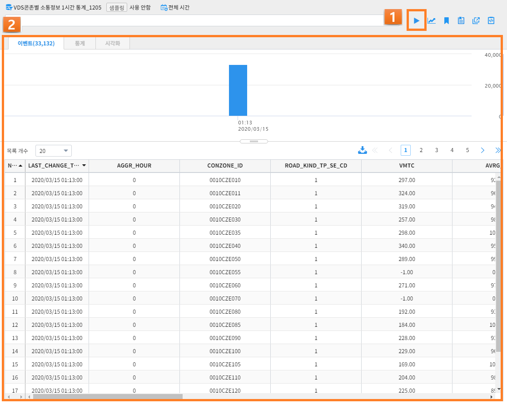- 특정값 검색
검색기능에는 원하는값만 선택해서 화면에 결과를 볼수 있는 기능도 제공을 하고 있습니다
해당 튜토리얼에서는 1번에 표시된 “CONZONE_ID”컬럼의 “0010CZE020”값을 마우스에 올려서 클릭을 하면
검색에추가, 검색에서제외, 새로운검색을 선택창이 나오는데 “검색에추가”를 클릭합니다

그러면 2번에 표시된 검색어창에 자동으로 클릭한정보가 표시가되면서
3번에 표시된 것처럼 “0010CZE020”값만 따로 결과창에 나오는것을 확인 할수 있습니다
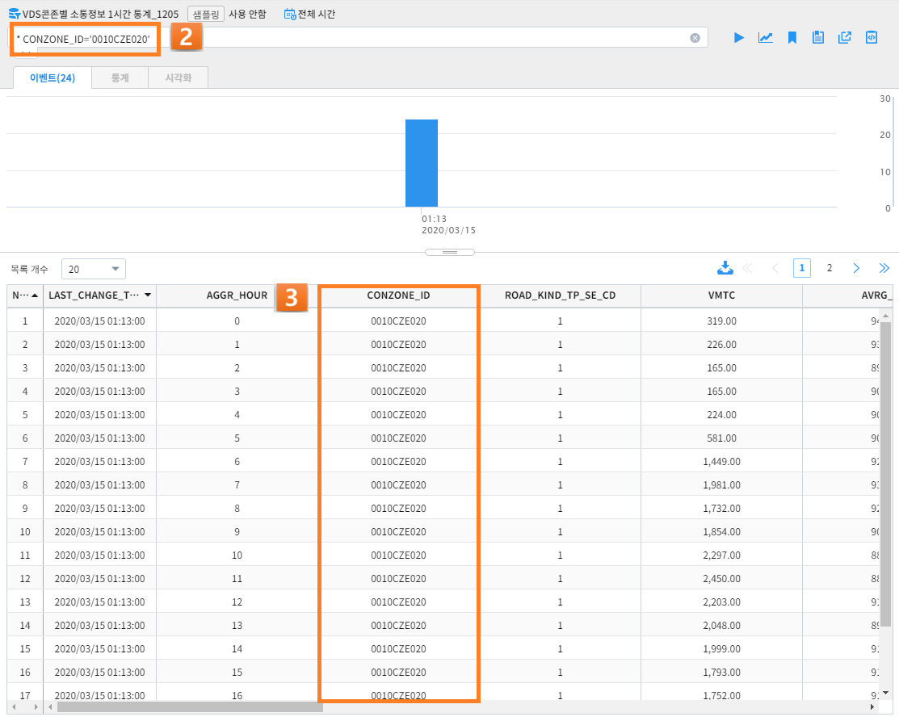- 전체 검색
다시 전체항목에대해 검색하려면 1번에 표시된곳에 검색어 입력값을 모두 지우고 2번에 표시된 “실행”아이콘을 클릭하면
3번에 표시된 화면에 모든 결과값이 나오는것을 확인할수 있습니다
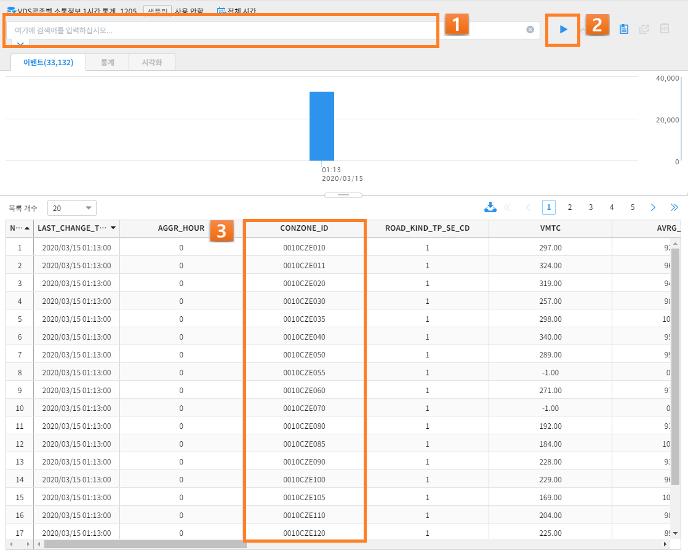7단계) 데이터 검색 결과 시각화¶
이번단계에서는 검색결과에 대해 차트나 그래프등으로 시각화하여 보는방법을 설명합니다
시각화종류에는 꺽은선형, 시계열분포, 모션, 히스토그램, 막대형, 원형, Sankey, 히트맵, 이상치, 클러스터맵, 지역맵
을 제공하고 있으며 본 튜토리얼에서는 막대형과 원형을 예로 들어서 설명 하겠습니다
- 막대형 차트 사용하기
왼쪽상단에 파란색의”Diamond-E 관리 > “시각화” 메뉴를 클릭합니다
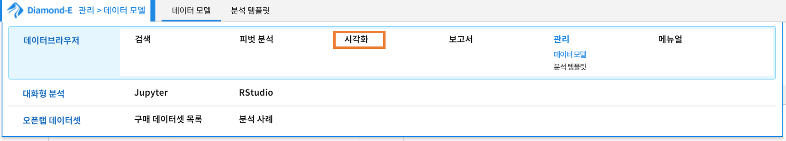“분석유형선택”을 클릭하면 여러종류의 시각화종류가 나오는데 주황색으로 표시한 “막대형”을 클릭합니다
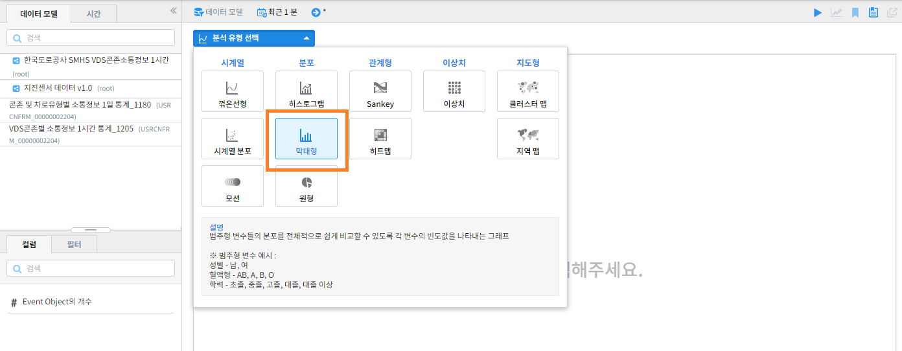왼쪽 컬럼항목에서 주화색1번의컬럼을 마우스를 클릭한채로 주황색2번 X축에 드래그하여 옮겨놓습니다
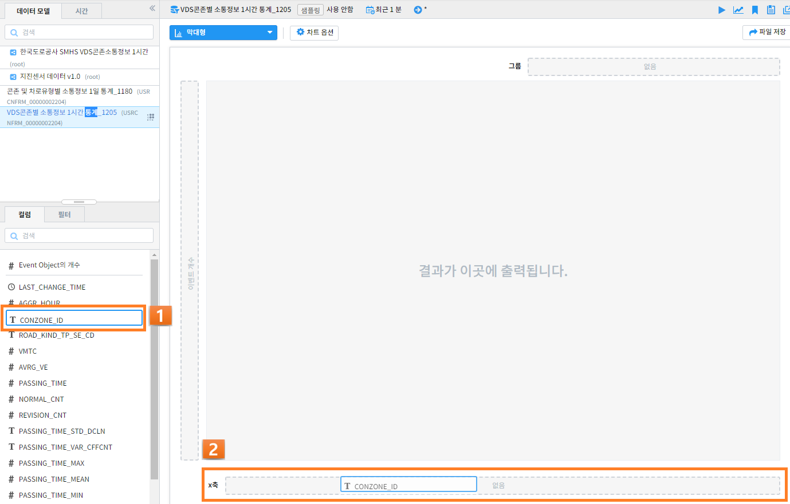이번에도 마찬가지도 왼쪽컬럼항목에서 주황색1번의 컬럼을 마우스를 클릭한채로 주황색2번 Y축에 드래그하여 옮겨놓습니다
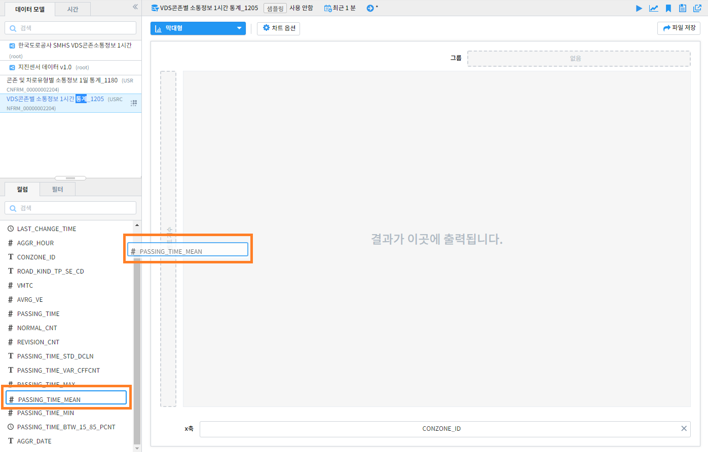주황색1번의 “실행” 버튼을 클릭하면 주황색2번영역에 막대형그래프가 나오게 됩니다
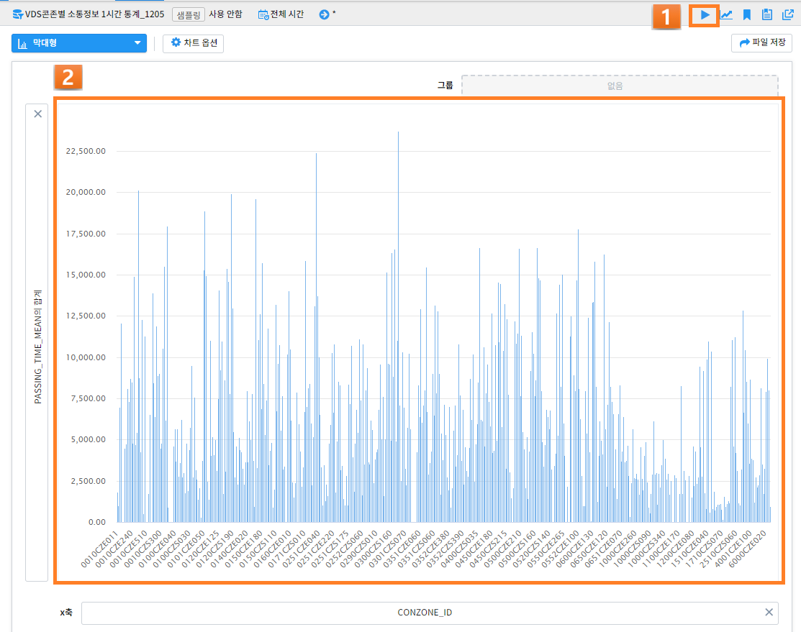- 원형 차트 사용하기
“분석유형선택”을 클릭하면 여러종류의 시각화종류가 나오는데 주황색으로 표시한 “원형”을 클릭합니다
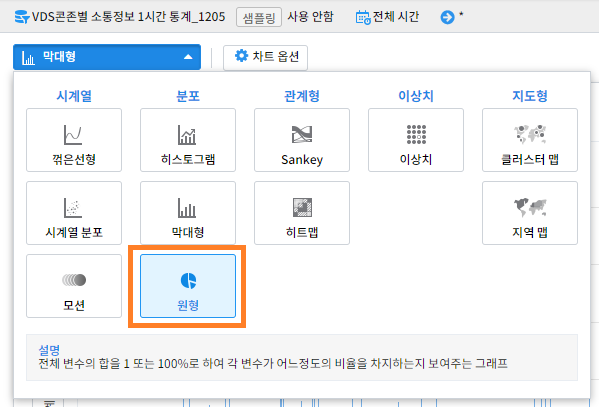막대형 차트에서 컬럼을 X축,Y에 드래그하는것처럼 “크기” 에 “PASSING_TIME_MEAN” , 그룹에 “CONZONE_ID” 컬럼을 마우스로 드래그하여 설정합니다
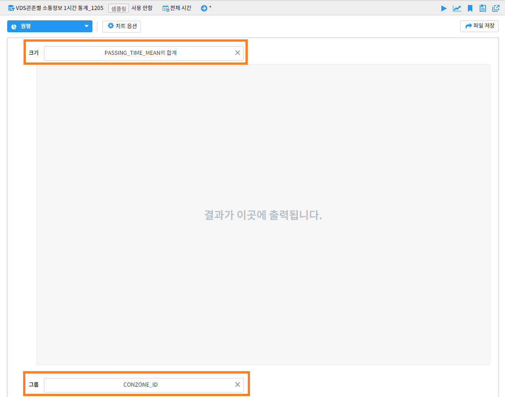“실행” 버튼을 클릭하여 시각화를 실행하면 화면에 원형으로 시각화가 표현됩니다
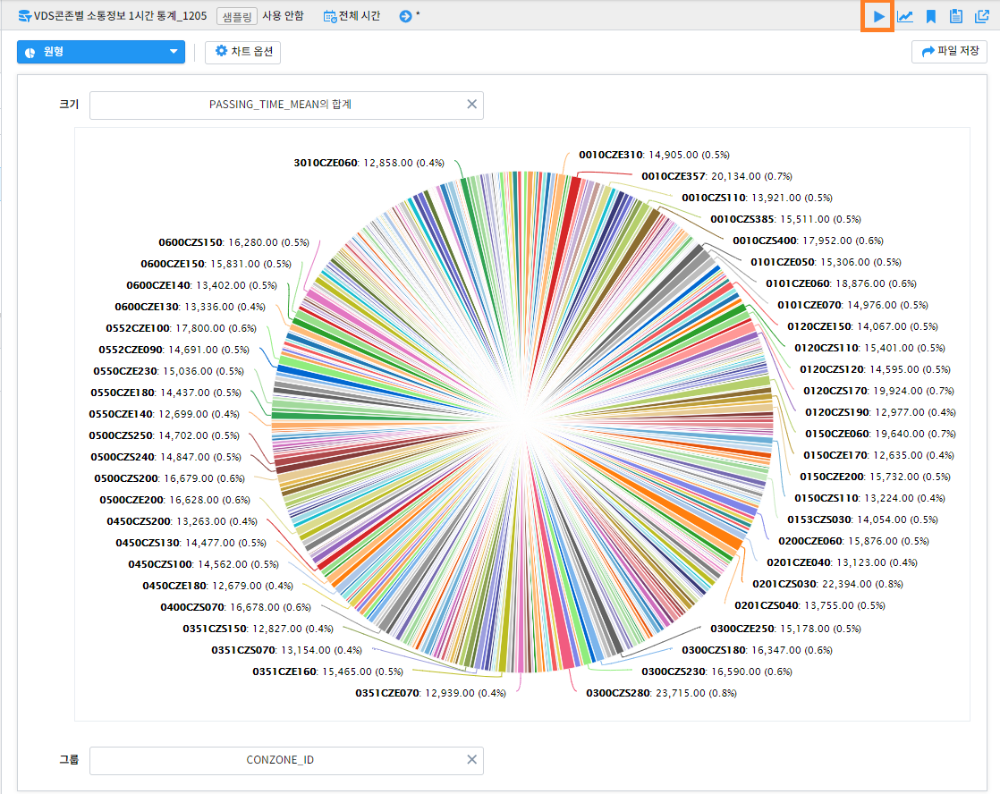- 시각화 결과를 파일로 저장하기
주황색1번의 “파일저장” 버튼을 클릭하여 인터넷브라우저 왼쪽하단에 주황색2번처럼 그림파일로 저장이 됩니다
저장된 그림파일을 클릭하면 주황색3번처럼 인터넷브라우저에서 보던 결과와 똑같이 그림이 나옵니다
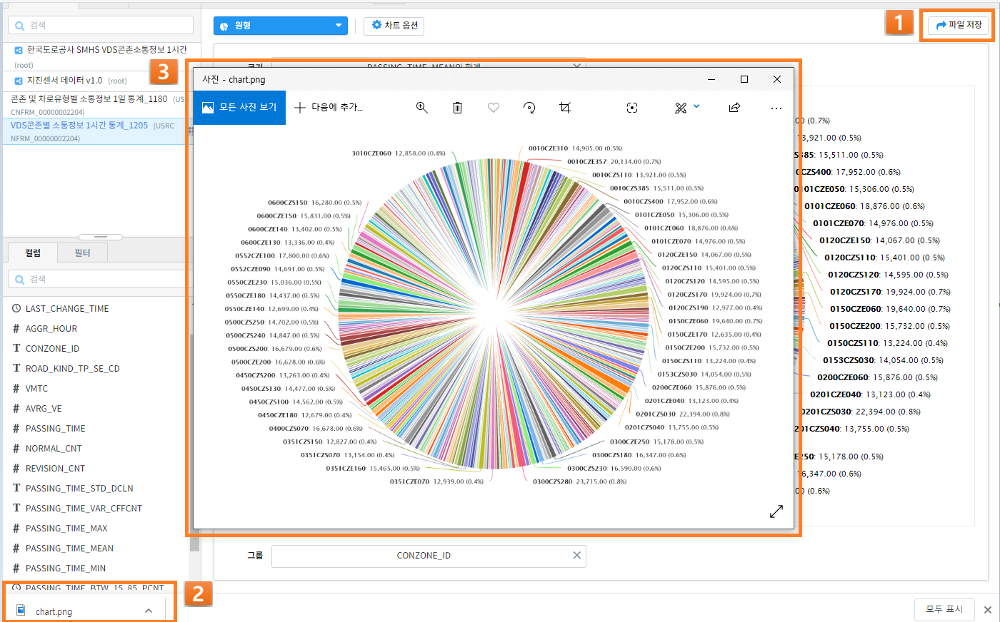이렇게 STEB1부터 STEB7까지 진행함으로써 데이터를 구매하여 검색하고 그 결과를 시각화표현하여 보는거 까지 큰 절차가 끝났습니다
참고1) 시각화 결과를 템플릿으로 관리¶
왼쪽상단에 파란색의”Diamond-E > 데이터 브라우저 > 관리 > “분석 템플릿”을 클릭합니다
해당 페이지는 STEB7에서 진행했던 시각화결과를 다시 볼수 있는 기능을 제공합니다
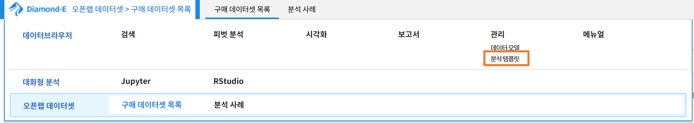이번 튜토리얼에서는 예로 아래 그림의 이름항목이 “VDS콘존별_막대형”을 클릭을 해봅니다
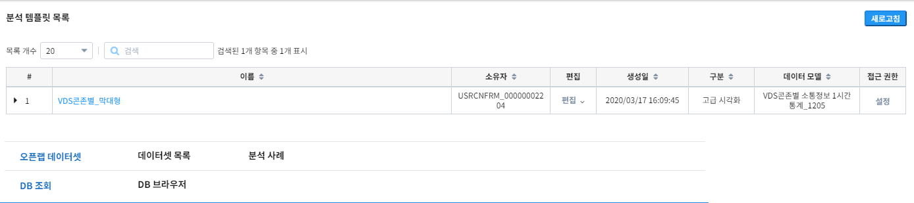그러면 하단의 그림처럼 막대형 차트의 화면으로 전환되는것을 볼수 있습니다
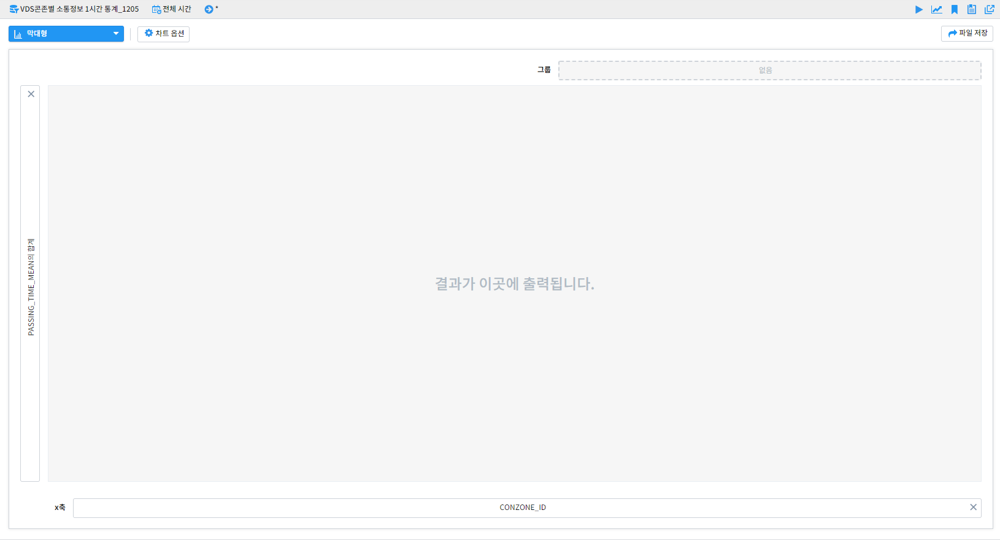참고2) 대화형 분석도구(R,Jupyter)¶
Diamond-E에서는 Jupyter, RStudio 두가지의 오픈소스 분석도구를 재공하고 있습니다
- Jupyter
왼쪽상단에 파란색의”Diamond-E > 대화형 분석 > “Jupyter” 메뉴를 클릭합니다
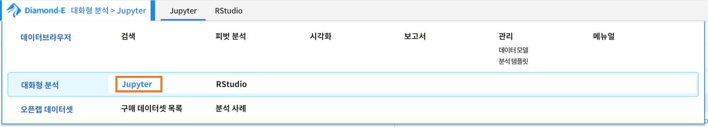아래의 그림과 같이 Jupyter화면이 나타나면서 Jupyter를 사용할수 있습니다
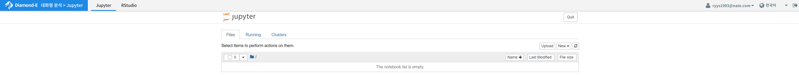- RStudio
왼쪽상단에 파란색의”Diamond-E > 대화형 분석 > “RStudio” 메뉴를 클릭합니다
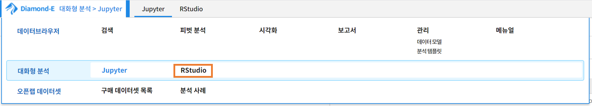아래의 그림과 같이 RStudio화면이 나타나면서 RStudio를 사용할수 있습니다
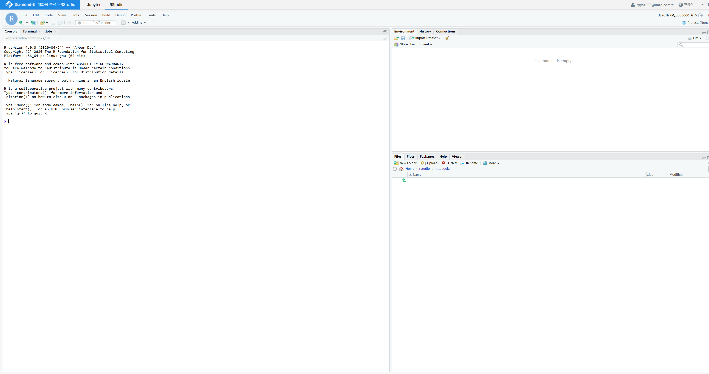